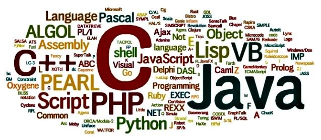
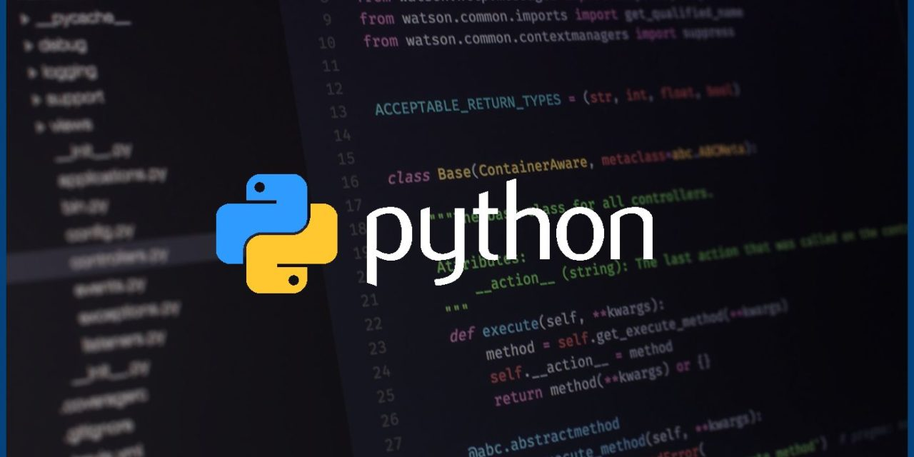
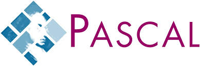
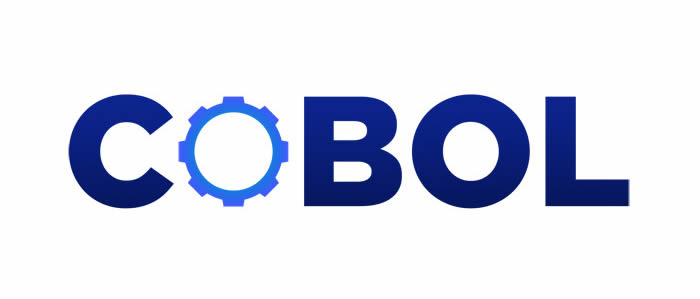
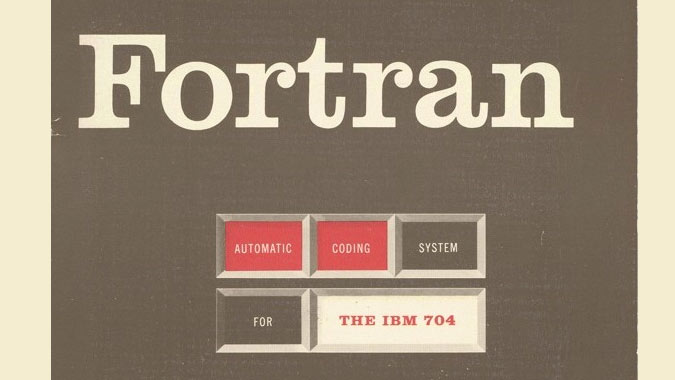

O que são linguagens de programação
Linguagens de programação são conjuntos de regras e sintaxes que permitem aos desenvolvedores escrever instruções que um computador pode entender e executar. Elas servem como intermediárias entre a lógica humana e os sistemas computacionais, possibilitando a criação de software, aplicativos e websites. Existem diversas linguagens, cada uma com suas características, como Python, Java, C++ e JavaScript, que variam em complexidade e aplicabilidade, atendendo a diferentes necessidades e áreas de desenvolvimento.

Python
Python é uma linguagem de programação de alto nível, conhecida por sua simplicidade e legibilidade. Desenvolvida por Guido van Rossum e lançada em 1991, Python suporta múltiplos paradigmas de programação, como programação orientada a objetos e funcional. É amplamente utilizada em diversas áreas, incluindo desenvolvimento web, análise de dados, inteligência artificial, automação e ciência de dados. Sua vasta biblioteca padrão e uma comunidade ativa tornam o Python uma escolha popular tanto para iniciantes quanto para profissionais experientes.

Java
Java é uma linguagem de programação de alto nível, orientada a objetos e multiplataforma, desenvolvida pela Sun Microsystems, agora parte da Oracle. Lançada em 1995, Java é conhecida por seu princípio "escreva uma vez, execute em qualquer lugar" (WORA), permitindo que programas Java sejam executados em qualquer dispositivo que tenha a Java Virtual Machine (JVM). É amplamente utilizada no desenvolvimento de aplicações web, móveis (especialmente Android), sistemas corporativos e muito mais. Sua sintaxe é semelhante à do C++, e oferece robustez, segurança e uma vasta biblioteca padrão.

C#
C# é uma linguagem de programação orientada a objetos criada pela Microsoft, lançada em 2000. Parte da plataforma .NET, é usada para desenvolver aplicações para desktop, web e jogos. Com uma sintaxe clara e moderna, C# suporta programação assíncrona e LINQ, facilitando a manipulação de dados. É popular em ambientes Windows, mas também é multiplataforma devido ao .NET Core.

C
C é uma linguagem de programação de propósito geral, desenvolvida na década de 1970. Conhecida por sua eficiência e controle de baixo nível, é amplamente usada para desenvolvimento de sistemas, software de sistema e aplicações embarcadas. C influenciou muitas linguagens posteriores, incluindo C++.

C++
C++ é uma extensão da linguagem C, criada por Bjarne Stroustrup nos anos 80. Adiciona conceitos de programação orientada a objetos e abstração, permitindo o desenvolvimento de aplicações complexas, como jogos e softwares de grande porte. É conhecida por sua performance e flexibilidade.

Pascal
Pascal é uma linguagem de programação procedural, desenvolvida nos anos 70 por Niklaus Wirth. Foi projetada para ensinar conceitos de programação estruturada e é frequentemente usada em ambientes acadêmicos. Pascal possui uma sintaxe clara e é usada em algumas aplicações de sistemas e educacionais.

Cobol
COBOL (Common Business-Oriented Language) é uma linguagem de programação desenvolvida nos anos 60, focada em aplicações de negócios. É conhecida por sua legibilidade e uso em sistemas financeiros e administrativos. Apesar de sua idade, ainda é amplamente utilizada em mainframes.

Fortran
Fortran (Formula Translation) é uma das linguagens de programação mais antigas, criada nos anos 50 para cálculos científicos e de engenharia. É especialmente forte em operações matemáticas e manipulação de arrays. Fortran continua sendo usado em áreas de computação de alto desempenho e simulações científicas.